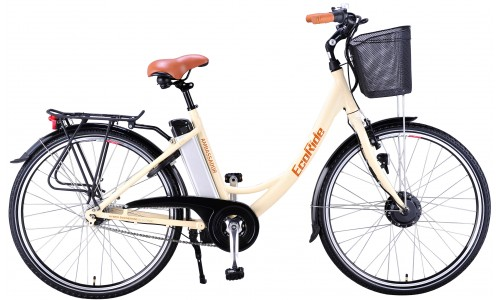
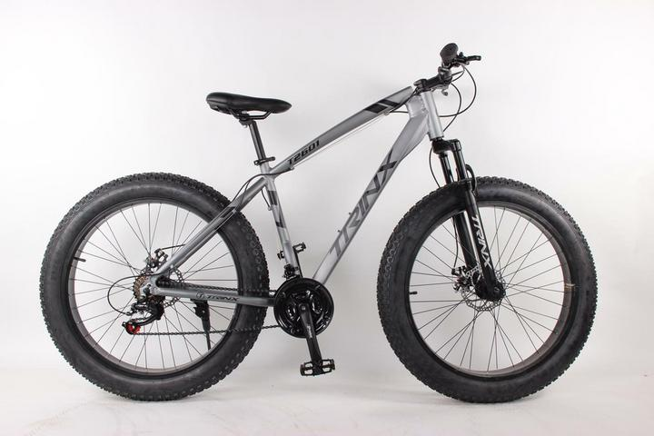

Category: Bicycles

This is a good sports electric bike, which can be used just as well with or without the motor engaged. Without the engine engaged, it works like a regular off-road bike. Also, due to the very light Lithium battery and aluminum frame, the weight is not much higher than a regular bike. You only plug in the engine when you want a rest, or on steep uphill slopes. Works with both pedal propulsion and throttle handle propulsion on the handlebars.
Specifications:
- Motor power: 250w
- Max noise: Less than 48dB(A)
- Top speed: approx. 25km/h (With the auxiliary engine on)
- Shrimp width per charge: 40-60km
- Incline: Greater than 30 degrees
- Gear: 7-gear Shift Shimano Acera M360
- Charging time: 3-5 hours
- Battery: 36V/10Ah (3 x 12V)
- Charger: 230Vac/40Vdc
- Frame and battery lock
- Batteries: 28kg (A regular bike weighs about 18kg)
- Service Life Batteries: approx. 6-12 years
- Warranty: Batteries - 2 yrs, Electric bike - 1 year

Comes with fat all-season tyres, for winter use on snow, with disc brakes and Shimano gears. It has an optimized geometry, good for stability on downhill slopes and possibilities for a wide range of tires. TRINX Fatbike is the ultimate means of transport for cycling adventures all year round, on trails and off-road, both in the mountains and in the forest. This extremely versatile bike type will impress you with its incredible carrying capacity and control. You can easily drive on a variety of rough and soft surfaces, from sandy beaches and mud, to snowy trails and plateaus.
Specifications:
- Color: Gray
- Suspension forks-front
- 26 inches
- Disc brakes front and rear
- Shimano 12 gear
- Adjustable seat height
- Carrying capacity: 130kg
- Powerful year-round fat-bike tires